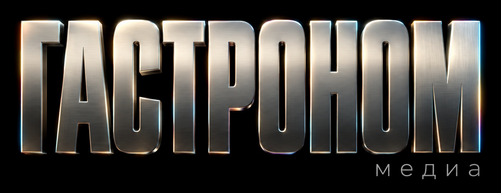
Выберите команду, подготовьте бриф и заполните поля по подсказкам. Здесь же — ответы на вопросы, которые обычно задают в чате.
Выберите поле, чтобы увидеть подсказку и скриншот Jira, или проходите шаги кнопкой «Далее».
Скопируйте шаблон в описание задачи и заполните. Чем точнее бриф, тем меньше раундов правок.
Задача: что нужно сделать Зачем: цель и повод (акция, запуск, сезон) Аудитория: для кого Ключевое сообщение: главная мысль одной фразой Что сдаём: список носителей и форматов с размерами Материалы: ссылки на KV (ключевой визуал), тексты, фото, логотипы Обязательные элементы: юридические плашки, цены, сроки акции Срок: дата и к чему она привязана Согласует: кто даёт финальное «да»
«Нужен баннер на кофе, срочно, до пятницы»
Задача: баннер в приложение «Магнит» под акцию «Неделя кофе» Зачем: анонс скидки 30% на кофе 20–26 октября Аудитория: покупатели приложения, 25–45 лет Ключевое сообщение: «Неделя кофе: −30% на весь кофе» Что сдаём: главный баннер 1080×540, сторис 1080×1920 Материалы: KV акции — ссылка, фото товаров — ссылка Обязательные элементы: плашка «Сроки акции 20–26.10», юр. текст Срок: 17 октября — выгрузка в приложение 18-го Согласует: бренд-менеджер формата
Такой бриф снимает четыре вопроса, которые иначе зададут в комментариях: размеры, сроки, юридический текст и кто согласует.
| # | Поле | Что делать | |
|---|---|---|---|
| 1 | Проект | проверить | Должно стоять Design_Center_Gastronom. |
| 2 | Тип задачи | выбрать | Задача. |
| 3 | Тема | заполнить | Название задачи: коротко и понятно, что нужно. |
| 4 | Автор | не трогать | Заполняется автоматически. |
| 5 | Компоненты | выбрать | Команда, которой адресована задача. Список команд — ниже. |
| 6 | Срок исполнения | выбрать | Иконка календаря → дата → «Подтвердить». |
| 7 | Оценка срочности | выбрать | Шкала 1–5: от «можно в общую очередь» до «есть жёсткая бизнес-дата». |
| 8 | Ценность для бизнеса | выбрать | Шкала 1–5: от «косметический запрос» до «влияет на выручку / ключевой KPI». |
| 9 | Описание | заполнить | Бриф: что нужно, форматы, материалы, к чему привязан срок. Файлы — во «Вложение». |
| 10 | Исполнитель | не трогать | «Автоматически»: задача уйдёт лиду команды. |
| 11 | Технический проект | не трогать | Остаётся «Техническое развитие системы (812)». |
| 12 | Business | выбрать | Дизайн центр. |
| 13 | Контрагент | выбрать | Ваше бизнес-направление. Начните вводить название в строку поиска. |
| 14 | Оценки времени | не трогать | Заполняет лид команды. |
| 15 | Объект РСБУ | не трогать | Значение должно быть «НЕ ИТМ!!! (000000496)». |
Ваш аккаунт появляется в Jira только после первого входа. Пока вы не вошли, доступ к доске выдать нельзя.
Откройте track.magnit.ru, введите корпоративный логин в формате ivanov_ii и пароль, нажмите «Вход». При двухфакторной аутентификации следуйте подсказкам на экране.
Обратитесь в свою IT-службу или к руководителю: нужен доступ через СУМД (систему управления доступом), доменная группа track_jira_user, в запросе укажите проект DCGASTRONOM. Если не получается — напишите Богдану Миленковичу.
После первого входа напишите Виктору Беню или лиду нужной команды: ФИО и корпоративную почту. Без первого входа ваша почта в Jira не найдётся.
Design_Center_Gastronom — отсюда создаются все задачи.
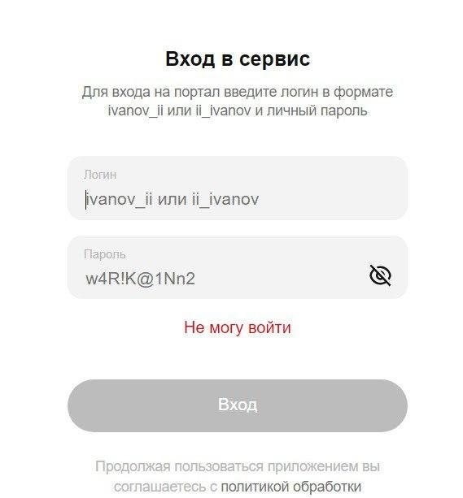
Команда выбирается по носителю: где макет будет жить. Выбранная команда получает задачу на свою доску, а её лид назначает исполнителя.
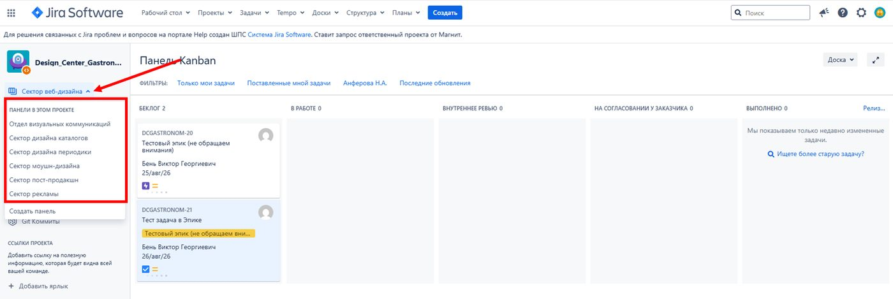
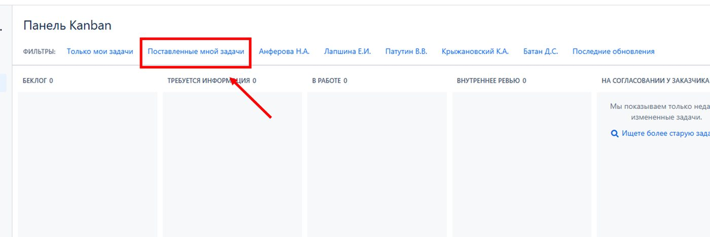
Периодика, пост-продакшн, моушн и каталоги входят в отдел каталогов и периодики (руководитель — Вячеслав Войченко).
Задача движется по колонкам доски слева направо. Оранжевым отмечены статусы, где ход за вами. Пунктиром — этапы, которые есть не на всех досках.
Лид командыЗадача пришла. Лид назначает исполнителя и переводит её дальше.
Ваш ходКоманде не хватает вводных. Ответьте в комментарии и отметьте исполнителя через @.
КомандаИсполнитель делает задачу. Вопросы — в комментариях к задаче.
КомандаЛид проверяет результат до того, как показать вам.
Ваш ходИсполнитель приложил материалы и отметил вас. Согласуйте или дайте правки — см. «Правки».
КомандаПодготовка к печати: периодика, пост-продакшн, каталоги, визуальные коммуникации, реклама.
КомандаТолько на доске пост-продакшна.
ФиналРабота принята. Ссылка на исходники — в комментарии исполнителя.
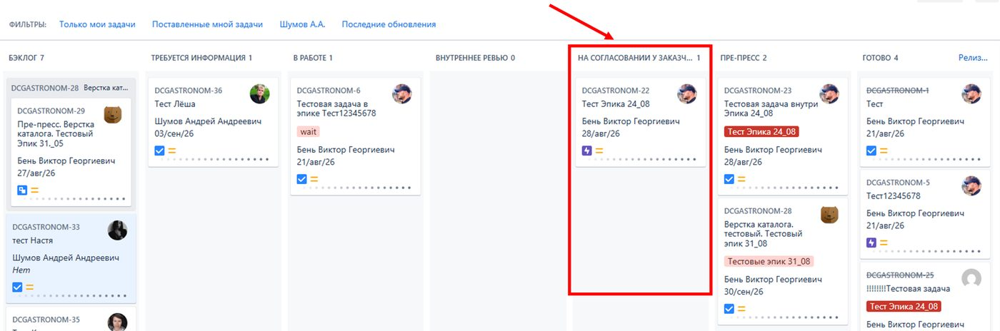
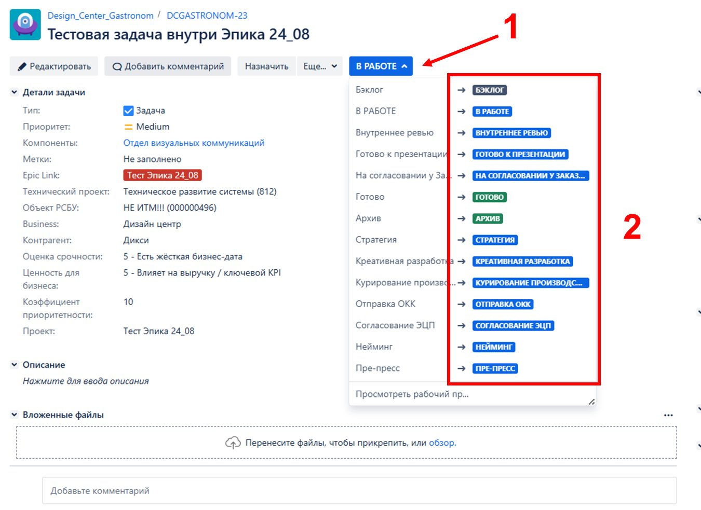
Для быстрых вопросов можно писать в мессенджер, но правки, комментарии и договорённости фиксируйте в Jira. Задачи из чатов и почты команда в работу не берёт.
Напишите их одним комментарием, отметьте лида и исполнителя через @ и верните задачу в «В работе».
«В работе» — правки внутри задачи: текст, цвет, замена фото, перестановка элементов. «Бэклог» — задача изменилась: новые носители, другая концепция, новые вводные. Лид заново оценит срок. Сомневаетесь — спросите лида в комментарии.
Напишите об этом в комментарии. Для экранных задач переведите задачу в «Готово». Для печатных команда сама проведёт пре-пресс и закроет задачу. Исполнитель оставит ссылку на исходники.
Например, к макету нужна анимация. Откройте задачу → «Ещё» → «Создать связанную задачу» и выберите в «Компонентах» нужную команду.
Описание и поля копируются, а вложения и комментарии — нет. Ссылку на финальный макет продублируйте в описании новой задачи.
Откройте задачу → «Ещё» → «Создать подзадачу». Например, отдельная подзадача на копирайт внутри задачи на баннер.
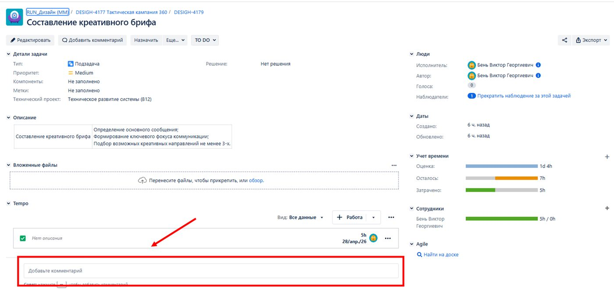
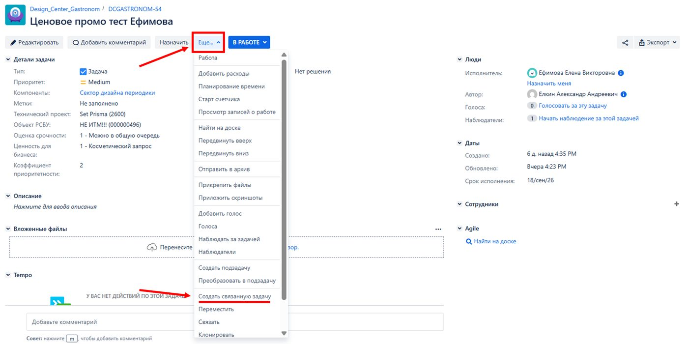
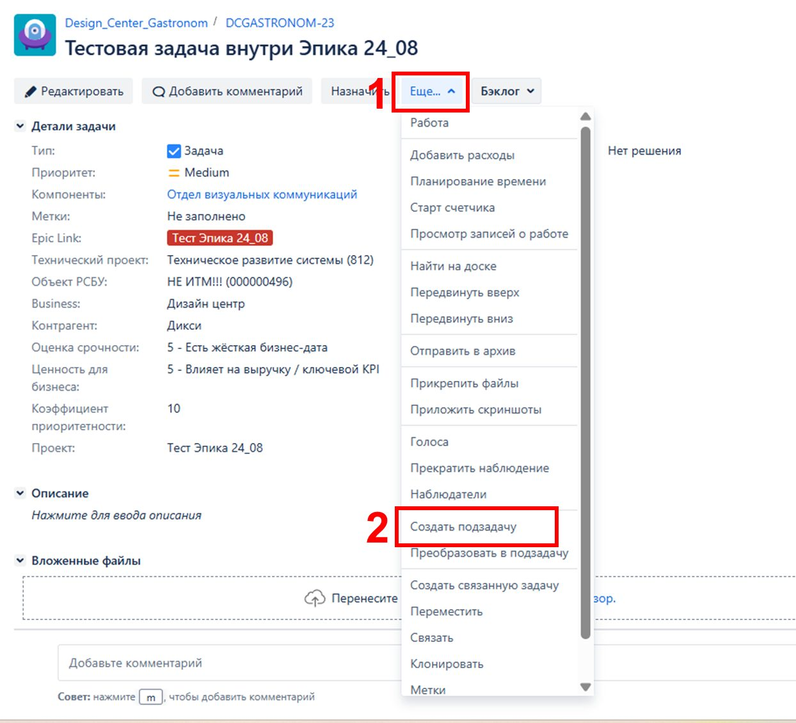
Задачи корректорам идут через Jira, почта correctors_DC@magnit.ru больше не используется. Ставит задачу заказчик, а не дизайнер.
Ссылка на финальный макет придёт в комментарии к вашей задаче.
Удобнее через «Ещё» → «Создать связанную задачу». В «Компонентах» выберите «Корректоры». Ссылку на макет вставьте в описание: комментарии и вложения в новую задачу не переносятся.
Справа в задаче нажмите на число наблюдателей и найдите дизайнера. Так он увидит правки корректора без вашего пересказа.
Корректор загрузит файл с правками в задачу, отметит вас и переведёт её в «Готово».
В своей задаче дизайнеру напишите комментарий: отметьте его через @ и приложите файл корректора. Дизайнер внесёт правки и приложит обновлённый макет туда же.
Корректор проверяет обновлённую версию, поэтому вложите её в задачу корректору. Затем: верните задачу в «Бэклог» → отметьте корректора через @ → переведите в «В работе» → назначьте его исполнителем. Так задача снова попадёт корректору в очередь: после «Готово» исполнителем числитесь вы.
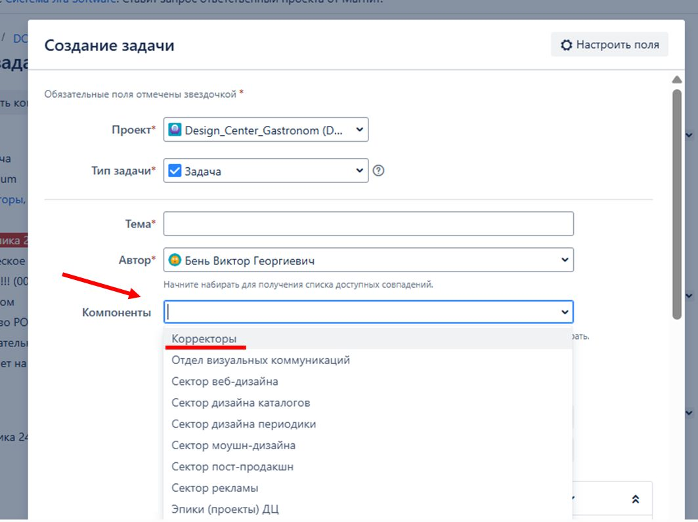
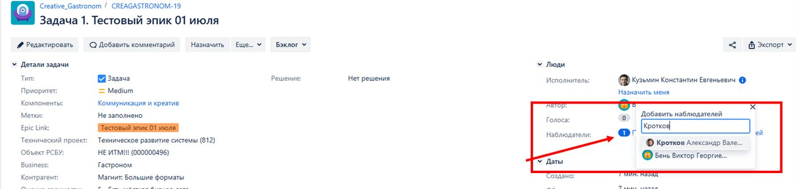
Автор задачи получает письмо о каждом действии в ней: файл, комментарий, статус, дата. Полностью отключить письма самостоятельно нельзя, но поток можно сократить в несколько раз.
Подключите канал по инструкции: события по задачам будут приходить туда. Это не отключает почту — её настройки ниже.
Аватар справа вверху → «Профиль» → в блоке «Настройки» нажмите «Изменить» → «Мои изменения»: «Не уведомлять меня» → «Обновить».
Там же «Автонаблюдение» → «Отключено». Jira перестанет подписывать вас на каждую задачу, где вы оставили комментарий.
Откройте задачу → справа в блоке «Люди» нажмите «Прекратить наблюдение».
Правой кнопкой на письмо от Jira → «Правила» → «Всегда перемещать сообщения от…» → папка «Jira». Письма останутся под рукой, но не будут засорять входящие.
Проверьте по порядку: вы в наблюдателях задачи (блок «Люди» справа); письма Jira не уехали в папку по правилу Outlook или в спам; в профиле Jira не стоит «Не уведомлять меня» на нужных событиях. Если всё в порядке, а писем нет — напишите Богдану Миленковичу со ссылкой на задачу.
Названия пунктов в профиле могут немного отличаться в зависимости от языка интерфейса. Системное сокращение уведомлений для всего проекта обсуждается с администраторами Jira.
Собраны из переписки с заказчиками. Не нашли свой — напишите, добавим.
Если вопрос про конкретную задачу, приложите ссылку на неё.